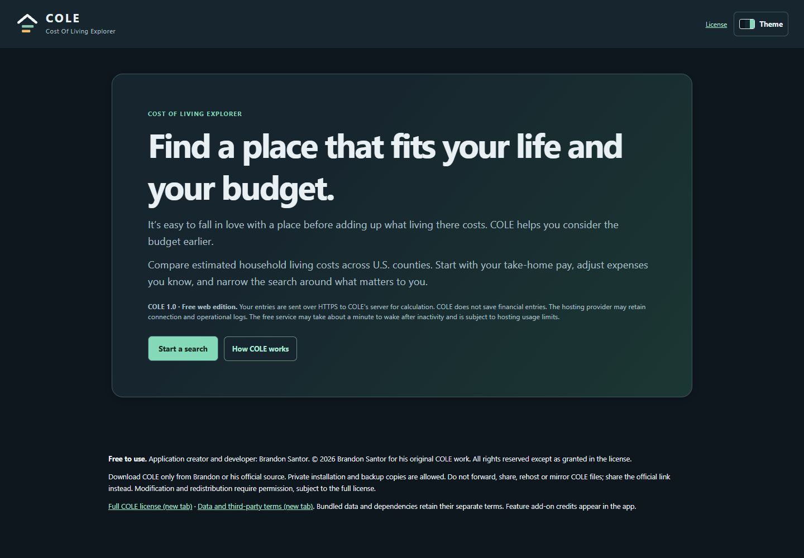
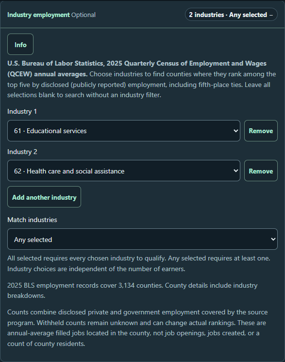
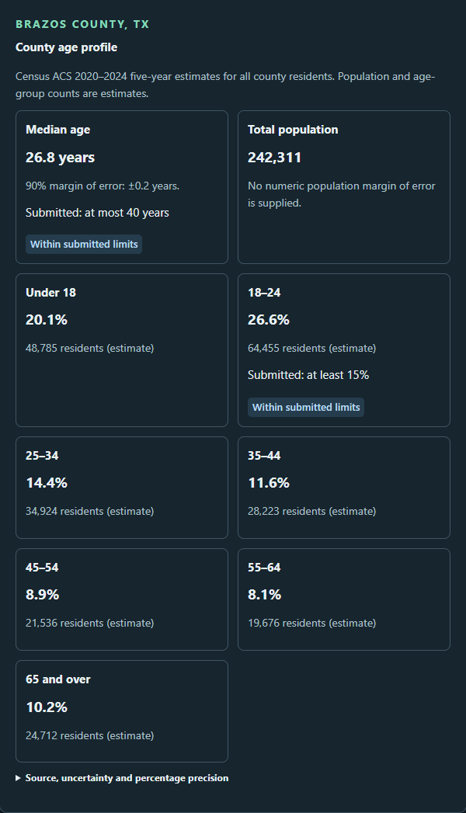

Define the household
InputHousehold + take-home income
ProcessInspect cost assumptions
OutputA defined budget scenario
Select a supported profile, enter income after tax, and identify extra expenses. Original EPI estimates remain inspectable.
I created and lead COLE to help people compare where they might live. Enter a household budget, choose priorities such as climate, jobs, or outdoor space, and compare up to three U.S. counties side by side. The free web and Windows editions are now at version 1.0.1, with shorter instructions and clearer explanations of the available filters.
Free web edition · Opens in a new tab. After inactivity, the service may take about a minute to wake.
Project at a glance ↓


A county’s costs mean more when they are considered alongside a household’s income and priorities. COLE connects those choices with public county data, then shows which assumptions place a result within or outside the submitted criteria. It is a comparison aid; standardized budgets cannot predict an individual household’s actual expenses.
I created the application’s functionality, logic, and baseline code, and lead its design, development, documentation, and integration. I also lead contributors’ feature add-ons and adapt them into a consistent search, map, and county-comparison workflow.
The Economic Policy Institute’s (EPI) Family Budget Calculator supplies ten modeled household budgets for each of 3,143 counties and county equivalents: 31,430 estimates, rather than a survey of actual household spending. The 2026 edition reports costs in 2025 dollars. Census geography connects the records to counties and place lookups; the National Oceanic and Atmospheric Administration (NOAA) supplies long-term county-area temperature averages for 1991–2020.
The optional modules add FEMA-derived hazard measures, BLS industry employment, Census ACS social and age estimates, and USGS PAD-US public-land information. Source periods, definitions, and missing values remain visible across the combined search.
Users choose a supported household profile, enter take-home income, replace selected expenses, add other costs, and optionally set a take-home reserve target. COLE removes EPI’s modeled tax amount before comparing with after-tax income. A personal replacement applies equally across searched counties; original EPI estimates remain inspectable.
Filters remain a draft until submitted. County, place, and Census ZIP Code Tabulation Area searches return county-level estimates, including where a place crosses county boundaries. A live count previews the criteria, and users can compare up to three counties.
Contributors supplied starter code and feature concepts for individual searches. I corrected, customized, and integrated those additions into COLE’s data stores, controls, map, and county comparisons. I built the shared system that combines the five modules’ matches while preserving the household-budget calculations.
Each module keeps its data preparation, filters, detail panels, and checks together. Industry and social-estimate modules read prepared SQLite databases. I carried source identifiers, missing values, and uncertainty through preparation and display, so the combined search retains the meaning and limits of each dataset.
The industry panel uses 2025 annual-average filled-job counts from BLS. Users can select several of twenty broad sectors and require all selected sectors or any selected sector to qualify. Qualification uses the top five disclosed employment counts, including fifth-place ties; withheld counts remain unknown. These are filled jobs located in a county, not vacancies or a complete unsuppressed ranking.
The social module uses Census ACS 2020–2024 five-year estimates. It displays poverty and the share of adults age 25 and over with a bachelor’s degree or higher, with 90% margins of error in percentage points. Filters, county details, and comparisons use the same definitions. Coverage gaps remain visible rather than being filled with zero.
The age module filters median age and seven age-group shares, then exposes county profiles and the published median-age margin of error. It uses ACS 2020–2024 estimates; unavailable counties remain unavailable, and the app does not claim derived margins of error for every age-group share.
The initial outdoor-space dataset had impossible county percentages and omitted 105 COLE counties. I led the replacement preparation using USGS public-land records and Census boundaries, investigated geometry and overlap issues, and checked the prepared results nationwide. The replacement covers all 3,143 COLE counties and supports the application’s filters and comparisons.
The public-outdoor-space module filters mapped publicly owned land recorded as open to the public, using USGS PAD-US 4.1. It reports acreage, ownership breakdowns, and county share while counting overlaps once. The denominator is the full county area, including water. Private, nonprofit, military, and restricted or closed areas are excluded. This is a mapped inventory, not a measure of vegetation, nearby park access, or recreation quality.
COLE derives county ranks from modeled annual loss rates: expected annual loss relative to the exposed buildings or population. Most measures use building-loss rates; heat wave uses population-loss rates. The ranks compare counties for a particular hazard. They are not disaster probabilities or FEMA’s official risk classes, and available coverage varies by hazard.
COLE 1.0 is available through its public website and as a packaged Windows application. I carried the same county data, budget calculations, and five optional modules through both editions, checked their results against each other, and verified the Windows download after extraction.
I shortened instructions across ten optional panels, replaced specialist wording with more familiar labels, and moved longer explanations into expandable details. The release keeps the existing datasets and calculations. It changes how people find and understand the controls; a formal user study has not yet measured the effect.
The free website lets visitors run a comparison without installing software. I added controlled request handling, verified data packaging, and recoverable busy responses for the hosted edition.
The web edition needs an internet connection and may take about a minute to wake after inactivity. Entries are processed over HTTPS; COLE does not save financial entries, though the hosting provider may retain connection and operational logs. Free-host usage limits still apply.
The 1.0.1 delivery record documents ten browser suites on the actual public HTTPS site, including all five feature modules. Six queries from two independent clients matched the local calculation baseline. The release also verified the public download and the identity of the served interface and prepared data files.
These checks confirm the tested delivery and calculation agreement. They do not establish continuous availability or performance under sustained public traffic.
I packaged COLE with its runtime and county data so people can run the core comparisons on Windows without installing Python or connecting to the internet. During Windows development, an executable served requests but then exited because its internal startup check failed in the packaged runtime. I led the diagnosis and correction, then checked startup, repeated use, shutdown, and recovery in the executable and a fresh extraction of the download.
Python, Flask, and Waitress run the application; JavaScript and Leaflet provide the interface and map. I used PyInstaller for Windows packaging. External source links still need internet access.
The 1.0.1 delivery records 898 Python regression checks and 24 final packaging and hosted-mode checks. Ten browser suites passed against the source application, final executable, exact ZIP extraction, and live website. The checks covered the optional modules, retained comparisons, submitted versus draft criteria, narrow layouts, startup, and recovery after an interrupted process.
All 216 files in the tested Windows extraction matched the release manifest. Prepared runtime data also matched its accepted manifest. This checks the identity of delivered files; source data retain their own coverage and methodological limits.
The Windows executable is unsigned and was tested on the development computer with an isolated runtime. Independent physical clean-machine, phone-device, and formal screen-reader certification are not claimed.
Explore each stage of the work.
Select a supported profile, enter income after tax, and identify extra expenses. Original EPI estimates remain inspectable.
Combine climate, hazards, multiple industry sectors, poverty, education, age profiles, and mapped public outdoor space. Preview the match count before submitting the search.
Find county-level estimates through counties, places, or Census ZIP areas. Place lookup does not create a neighborhood-level cost forecast.
Inspect job-count disclosure, Census margins of error, hazard-rate definitions, source periods, and budget assumptions before judging a result.